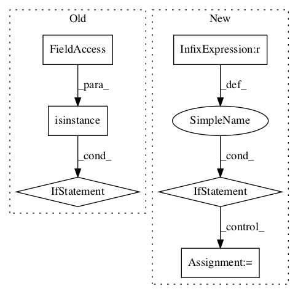

da37438735fd4b845bb0874562bd071865c480bb,texar/modules/encoders/rnn_encoders.py,RNNEncoderBase,__init__,#RNNEncoderBase#Any#Any#Any#,49

Before Change
raise ValueError(
"`vocab_szie` is required if embedding is enabled and "
"`embedding` is not provided")
if isinstance(embedding, tf.Variable):
self._embedding = embedding
else:
self._embedding = embedder_utils.get_embedding(
self._hparams.embedding, embedding, self._vocab_size,
self.variable_scope)
if self._hparams.embedding.trainable:
self._add_trainable_variable(self._embedding)
if self._vocab_size is None:
self._vocab_size = self._embedding.get_shape().as_list()[0]
After Change
else:
self._cell_fw = layers.get_rnn_cell(self._hparams.rnn_cell_fw)
if cell_bw is not None:
self._cell_bw = cell_bw
elif self.hparams.rnn_cell_share_config:
self._cell_bw = layers.get_rnn_cell(self._hparams.rnn_cell_fw)
else:
self._cell_bw = layers.get_rnn_cell(self._hparams.rnn_cell_bw)
@staticmethod
def default_hparams():
Returns a dictionary of hyperparameters with default values.
In pattern: SUPERPATTERN
Frequency: 3
Non-data size: 6
Instances
Project Name: asyml/texar
Commit Name: da37438735fd4b845bb0874562bd071865c480bb
Time:
Author: null
File Name: texar/modules/encoders/rnn_encoders.py
Class Name: RNNEncoderBase
Method Name: __init__
Project Name: GPflow/GPflow
Commit Name: 8c65ef658930afecb7001ce671f15772a0a4b23b
Time:
Author: null
File Name: gpflow/base.py
Class Name: Parameter
Method Name: __init__
Project Name: asyml/texar
Commit Name: c13faf9996622ddb6297aa090ce0157bcbb5cfe3
Time:
Author: null
File Name: texar/modules/classifiers/conv_classifiers.py
Class Name: Conv1DClassifier
Method Name: __init__